Geographically weighted regression
gwr.RdThe function implements the basic geographically weighted regression approach to exploring spatial non-stationarity for given global bandwidth and chosen weighting scheme.
Arguments
- formula
regression model formula as in
lm- data
model data frame, or SpatialPointsDataFrame or SpatialPolygonsDataFrame as defined in package sp
- coords
matrix of coordinates of points representing the spatial positions of the observations; may be omitted if the object passed through the data argument is from package sp
- bandwidth
bandwidth used in the weighting function, possibly calculated by
gwr.sel- gweight
geographical weighting function, at present
gwr.Gauss()default, orgwr.gauss(), the previous default orgwr.bisquare()- adapt
either NULL (default) or a proportion between 0 and 1 of observations to include in weighting scheme (k-nearest neighbours)
- hatmatrix
if TRUE, return the hatmatrix as a component of the result, ignored if
fit.pointsgiven- fit.points
an object containing the coordinates of fit points; often an object from package sp; if missing, the coordinates given through the data argument object, or the coords argument are used
- longlat
TRUE if point coordinates are longitude-latitude decimal degrees, in which case distances are measured in kilometers; if x is a SpatialPoints object, the value is taken from the object itself
- se.fit
if TRUE, return local coefficient standard errors - if
hatmatrixis TRUE and no fit.points are given, two effective degrees of freedom sigmas will be used to generate alternative coefficient standard errors- weights
case weights used as in weighted least squares, beware of scaling issues, probably unsafe
- cl
if NULL, ignored, otherwise
clmust be an object describing a “cluster” created usingmakeClusterin the parallel package. The cluster will then be used to hand off the calculation of local coefficients to cluster nodes, if fit points have been given as an argument, andhatmatrix=FALSE- predictions
default FALSE; if TRUE and no fit points given, return GW fitted values at data points, if fit points given and are a Spatial*DataFrame object containing the RHS variables in the formula, return GW predictions at the fit points
- fittedGWRobject
a fitted
gwrobject with a hatmatrix (optional), if given, and if fit.points are given and ifse.fitis TRUE, two effective degrees of freedom sigmas will be used to generate alternative coefficient standard errors- se.fit.CCT
default TRUE, compute local coefficient standard errors using formula (2.14), p. 55, in the GWR book
- x
an object of class "gwr" returned by the
gwrfunction- ...
arguments to be passed to other functions
Details
The function applies the weighting function in turn to each of the
observations, or fit points if given, calculating a weighted regression
for each point. The results may be explored to see if coefficient values vary over space. The local coefficient estimates may be made on a multi-node cluster using the cl argument to pass through a parallel cluster. The function will then divide the fit points (which must be given separately) between the clusters for fitting. Note that each node will need to have the “spgwr” package present, so initiating by clusterEvalQ(cl, library(spgwr)) may save a little time per node. The function clears the global environment on the node of objects sent. Using two nodes reduces timings to a little over half the time for a single node.
The section of the examples code now includes two simulation scenarios, showing how important it is to check that mapped pattern in local coefficients is actually there, rather than being an artefact.
Value
A list of class “gwr”:
- SDF
a SpatialPointsDataFrame (may be gridded) or SpatialPolygonsDataFrame object (see package "sp") with fit.points, weights, GWR coefficient estimates, R-squared, and coefficient standard errors in its "data" slot.
- lhat
Leung et al. L matrix
- lm
Ordinary least squares global regression on the same model formula, as returned by lm.wfit().
- bandwidth
the bandwidth used.
- this.call
the function call used.
References
Fotheringham, A.S., Brunsdon, C., and Charlton, M.E., 2002, Geographically Weighted Regression, Chichester: Wiley; Paez A, Farber S, Wheeler D, 2011, "A simulation-based study of geographically weighted regression as a method for investigating spatially varying relationships", Environment and Planning A 43(12) 2992-3010; http://gwr.nuim.ie/
See also
Examples
data(columbus, package="spData")
col.lm <- lm(CRIME ~ INC + HOVAL, data=columbus)
summary(col.lm)
#>
#> Call:
#> lm(formula = CRIME ~ INC + HOVAL, data = columbus)
#>
#> Residuals:
#> Min 1Q Median 3Q Max
#> -34.418 -6.388 -1.580 9.052 28.649
#>
#> Coefficients:
#> Estimate Std. Error t value Pr(>|t|)
#> (Intercept) 68.6190 4.7355 14.490 < 2e-16 ***
#> INC -1.5973 0.3341 -4.780 1.83e-05 ***
#> HOVAL -0.2739 0.1032 -2.654 0.0109 *
#> ---
#> Signif. codes: 0 ‘***’ 0.001 ‘**’ 0.01 ‘*’ 0.05 ‘.’ 0.1 ‘ ’ 1
#>
#> Residual standard error: 11.43 on 46 degrees of freedom
#> Multiple R-squared: 0.5524, Adjusted R-squared: 0.5329
#> F-statistic: 28.39 on 2 and 46 DF, p-value: 9.341e-09
#>
col.bw <- gwr.sel(CRIME ~ INC + HOVAL, data=columbus,
coords=cbind(columbus$X, columbus$Y))
#> Bandwidth: 12.65221 CV score: 7432.209
#> Bandwidth: 20.45127 CV score: 7462.704
#> Bandwidth: 7.83213 CV score: 7323.545
#> Bandwidth: 4.853154 CV score: 7307.57
#> Bandwidth: 5.125504 CV score: 7322.796
#> Bandwidth: 3.012046 CV score: 6461.764
#> Bandwidth: 1.874179 CV score: 6473.378
#> Bandwidth: 2.475485 CV score: 6109.995
#> Bandwidth: 2.447721 CV score: 6098.372
#> Bandwidth: 2.228647 CV score: 6064.1
#> Bandwidth: 2.264538 CV score: 6060.774
#> Bandwidth: 2.280666 CV score: 6060.649
#> Bandwidth: 2.274969 CV score: 6060.601
#> Bandwidth: 2.2751 CV score: 6060.601
#> Bandwidth: 2.27506 CV score: 6060.601
#> Bandwidth: 2.275019 CV score: 6060.601
#> Bandwidth: 2.27506 CV score: 6060.601
col.gauss <- gwr(CRIME ~ INC + HOVAL, data=columbus,
coords=cbind(columbus$X, columbus$Y), bandwidth=col.bw, hatmatrix=TRUE)
col.gauss
#> Call:
#> gwr(formula = CRIME ~ INC + HOVAL, data = columbus, coords = cbind(columbus$X,
#> columbus$Y), bandwidth = col.bw, hatmatrix = TRUE)
#> Kernel function: gwr.Gauss
#> Fixed bandwidth: 2.27506
#> Summary of GWR coefficient estimates at data points:
#> Min. 1st Qu. Median 3rd Qu. Max. Global
#> X.Intercept. 23.233234 54.124872 63.902588 68.756460 80.900619 68.6190
#> INC -3.130714 -1.912908 -0.984380 -0.368564 1.291075 -1.5973
#> HOVAL -1.052811 -0.376735 -0.097394 0.030049 0.794577 -0.2739
#> Number of data points: 49
#> Effective number of parameters (residual: 2traceS - traceS'S): 29.6163
#> Effective degrees of freedom (residual: 2traceS - traceS'S): 19.3837
#> Sigma (residual: 2traceS - traceS'S): 8.027502
#> Effective number of parameters (model: traceS): 23.92796
#> Effective degrees of freedom (model: traceS): 25.07204
#> Sigma (model: traceS): 7.058361
#> Sigma (ML): 5.048946
#> AICc (GWR p. 61, eq 2.33; p. 96, eq. 4.21): 403.6187
#> AIC (GWR p. 96, eq. 4.22): 321.6635
#> Residual sum of squares: 1249.101
#> Quasi-global R2: 0.9070486
col.d <- gwr.sel(CRIME ~ INC + HOVAL, data=columbus,
coords=cbind(columbus$X, columbus$Y), gweight=gwr.bisquare)
#> Bandwidth: 12.65221 CV score: 8180.619
#> Bandwidth: 20.45127 CV score: 7552.85
#> Bandwidth: 25.27136 CV score: 7508.227
#> Bandwidth: 23.68132 CV score: 7519.864
#> Bandwidth: 28.25033 CV score: 7491.85
#> Bandwidth: 30.09144 CV score: 7486.673
#> Bandwidth: 31.69353 CV score: 7483.663
#> Bandwidth: 31.08159 CV score: 7484.706
#> Bandwidth: 32.21945 CV score: 7482.846
#> Bandwidth: 32.54449 CV score: 7482.371
#> Bandwidth: 32.74538 CV score: 7482.088
#> Bandwidth: 32.86953 CV score: 7481.916
#> Bandwidth: 32.94626 CV score: 7481.812
#> Bandwidth: 32.99368 CV score: 7481.748
#> Bandwidth: 33.02299 CV score: 7481.708
#> Bandwidth: 33.04111 CV score: 7481.684
#> Bandwidth: 33.0523 CV score: 7481.669
#> Bandwidth: 33.05922 CV score: 7481.659
#> Bandwidth: 33.0635 CV score: 7481.654
#> Bandwidth: 33.06614 CV score: 7481.65
#> Bandwidth: 33.06777 CV score: 7481.648
#> Bandwidth: 33.06878 CV score: 7481.647
#> Bandwidth: 33.06941 CV score: 7481.646
#> Bandwidth: 33.06979 CV score: 7481.645
#> Bandwidth: 33.07003 CV score: 7481.645
#> Bandwidth: 33.07018 CV score: 7481.645
#> Bandwidth: 33.07027 CV score: 7481.645
#> Bandwidth: 33.07032 CV score: 7481.645
#> Bandwidth: 33.07037 CV score: 7481.645
#> Bandwidth: 33.07037 CV score: 7481.645
#> Warning: Bandwidth converged to upper bound:33.0704149683672
col.bisq <- gwr(CRIME ~ INC + HOVAL, data=columbus,
coords=cbind(columbus$X, columbus$Y), bandwidth=col.d,
gweight=gwr.bisquare, hatmatrix=TRUE)
col.bisq
#> Call:
#> gwr(formula = CRIME ~ INC + HOVAL, data = columbus, coords = cbind(columbus$X,
#> columbus$Y), bandwidth = col.d, gweight = gwr.bisquare, hatmatrix = TRUE)
#> Kernel function: gwr.bisquare
#> Fixed bandwidth: 33.07037
#> Summary of GWR coefficient estimates at data points:
#> Min. 1st Qu. Median 3rd Qu. Max. Global
#> X.Intercept. 68.30731 68.96074 69.26155 69.57103 71.64487 68.6190
#> INC -1.72665 -1.64754 -1.61378 -1.56908 -1.46759 -1.5973
#> HOVAL -0.33314 -0.30522 -0.28063 -0.25355 -0.18834 -0.2739
#> Number of data points: 49
#> Effective number of parameters (residual: 2traceS - traceS'S): 4.604881
#> Effective degrees of freedom (residual: 2traceS - traceS'S): 44.39512
#> Sigma (residual: 2traceS - traceS'S): 11.3765
#> Effective number of parameters (model: traceS): 3.917653
#> Effective degrees of freedom (model: traceS): 45.08235
#> Sigma (model: traceS): 11.28946
#> Sigma (ML): 10.82875
#> AICc (GWR p. 61, eq 2.33; p. 96, eq. 4.21): 383.6983
#> AIC (GWR p. 96, eq. 4.22): 376.4297
#> Residual sum of squares: 5745.83
#> Quasi-global R2: 0.5724262
data(georgia)
g.adapt.gauss <- gwr.sel(PctBach ~ TotPop90 + PctRural + PctEld + PctFB +
PctPov + PctBlack, data=gSRDF, adapt=TRUE)
#> Adaptive q: 0.381966 CV score: 2048.743
#> Adaptive q: 0.618034 CV score: 2028.561
#> Adaptive q: 0.763932 CV score: 2041.554
#> Adaptive q: 0.593544 CV score: 2027.538
#> Adaptive q: 0.5306416 CV score: 2026.568
#> Adaptive q: 0.536485 CV score: 2026.541
#> Adaptive q: 0.5402641 CV score: 2026.493
#> Adaptive q: 0.5606152 CV score: 2026.641
#> Adaptive q: 0.5480375 CV score: 2026.425
#> Adaptive q: 0.5568526 CV score: 2026.552
#> Adaptive q: 0.5514046 CV score: 2026.493
#> Adaptive q: 0.5458334 CV score: 2026.425
#> Adaptive q: 0.5468793 CV score: 2026.417
#> Adaptive q: 0.5469222 CV score: 2026.417
#> Adaptive q: 0.5473482 CV score: 2026.417
#> Adaptive q: 0.547116 CV score: 2026.416
#> Adaptive q: 0.5471567 CV score: 2026.415
#> Adaptive q: 0.5472298 CV score: 2026.416
#> Adaptive q: 0.5471567 CV score: 2026.415
res.adpt <- gwr(PctBach ~ TotPop90 + PctRural + PctEld + PctFB + PctPov +
PctBlack, data=gSRDF, adapt=g.adapt.gauss)
res.adpt
#> Call:
#> gwr(formula = PctBach ~ TotPop90 + PctRural + PctEld + PctFB +
#> PctPov + PctBlack, data = gSRDF, adapt = g.adapt.gauss)
#> Kernel function: gwr.Gauss
#> Adaptive quantile: 0.5471567 (about 86 of 159 data points)
#> Summary of GWR coefficient estimates at data points:
#> Min. 1st Qu. Median 3rd Qu. Max.
#> X.Intercept. 1.3575e+01 1.4086e+01 1.5223e+01 1.5700e+01 1.5975e+01
#> TotPop90 1.8694e-05 2.0530e-05 2.2791e-05 2.4827e-05 2.5862e-05
#> PctRural -5.2549e-02 -4.8286e-02 -4.1900e-02 -3.6000e-02 -3.2038e-02
#> PctEld -1.5889e-01 -1.3354e-01 -1.1456e-01 -9.6816e-02 -5.9114e-02
#> PctFB 8.1590e-01 9.9348e-01 1.3542e+00 1.7432e+00 1.9597e+00
#> PctPov -1.8387e-01 -1.6427e-01 -1.2554e-01 -9.4889e-02 -6.5134e-02
#> PctBlack -1.2025e-02 -1.7586e-04 1.1587e-02 2.7628e-02 3.8985e-02
#> Global
#> X.Intercept. 14.7766
#> TotPop90 0.0000
#> PctRural -0.0439
#> PctEld -0.0619
#> PctFB 1.2562
#> PctPov -0.1554
#> PctBlack 0.0219
pairs(as(res.adpt$SDF, "data.frame")[,2:8], pch=".")
brks <- c(-0.25, 0, 0.01, 0.025, 0.075)
cols <- grey(5:2/6)
plot(res.adpt$SDF, col=cols[findInterval(res.adpt$SDF$PctBlack, brks,
all.inside=TRUE)])
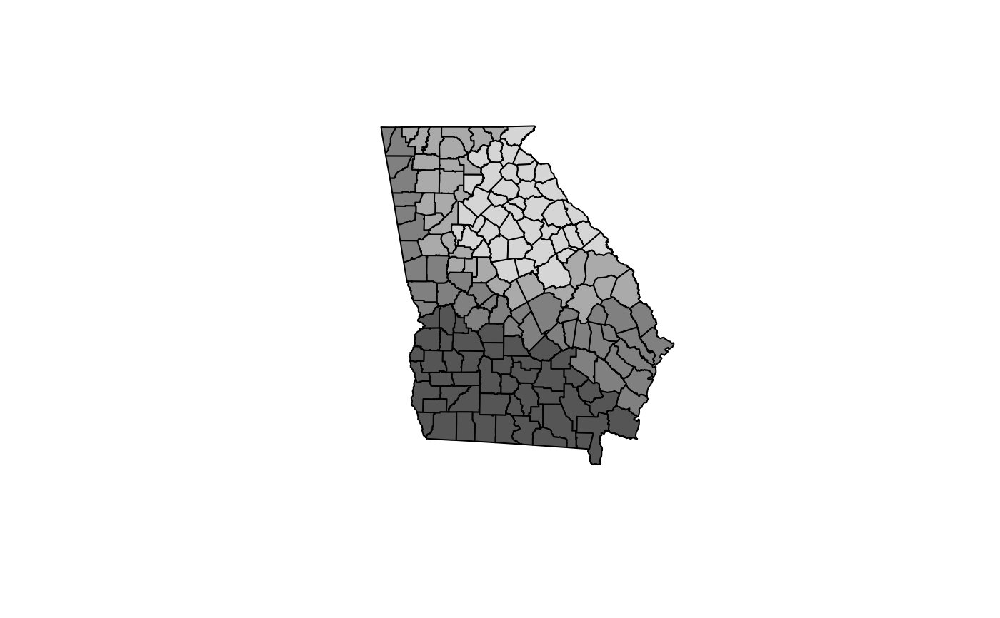
# \donttest{
# simulation scenario with patterned dependent variable
set.seed(1)
X0 <- runif(nrow(gSRDF)*3)
X1 <- matrix(sample(X0), ncol=3)
X1 <- prcomp(X1, center=FALSE, scale.=FALSE)$x
gSRDF$X1 <- X1[,1]
gSRDF$X2 <- X1[,2]
gSRDF$X3 <- X1[,3]
bw <- gwr.sel(PctBach ~ X1 + X2 + X3, data=gSRDF, verbose=FALSE)
out <- gwr(PctBach ~ X1 + X2 + X3, data=gSRDF, bandwidth=bw, hatmatrix=TRUE)
out
#> Call:
#> gwr(formula = PctBach ~ X1 + X2 + X3, data = gSRDF, bandwidth = bw,
#> hatmatrix = TRUE)
#> Kernel function: gwr.Gauss
#> Fixed bandwidth: 130.6116
#> Summary of GWR coefficient estimates at data points:
#> Min. 1st Qu. Median 3rd Qu. Max. Global
#> X.Intercept. 8.323876 9.743040 10.152873 10.561355 11.388507 9.8045
#> X1 -4.502282 -1.718641 -0.712201 -0.091787 0.958291 -1.3247
#> X2 -1.875667 -1.242827 -0.856242 -0.362162 0.585513 -1.1137
#> X3 -2.482145 -0.618635 0.218977 0.862259 3.313847 0.2651
#> Number of data points: 159
#> Effective number of parameters (residual: 2traceS - traceS'S): 14.57996
#> Effective degrees of freedom (residual: 2traceS - traceS'S): 144.42
#> Sigma (residual: 2traceS - traceS'S): 5.658114
#> Effective number of parameters (model: traceS): 10.63717
#> Effective degrees of freedom (model: traceS): 148.3628
#> Sigma (model: traceS): 5.582425
#> Sigma (ML): 5.392459
#> AICc (GWR p. 61, eq 2.33; p. 96, eq. 4.21): 1012.337
#> AIC (GWR p. 96, eq. 4.22): 997.6901
#> Residual sum of squares: 4623.5
#> Quasi-global R2: 0.09839479
spplot(gSRDF, "PctBach", col.regions=grey.colors(20))
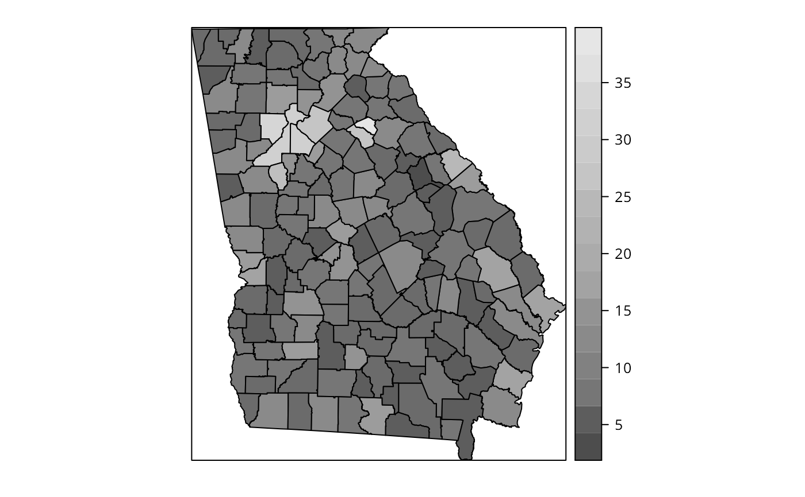
spplot(gSRDF, c("X1", "X2", "X3"), col.regions=grey.colors(20))
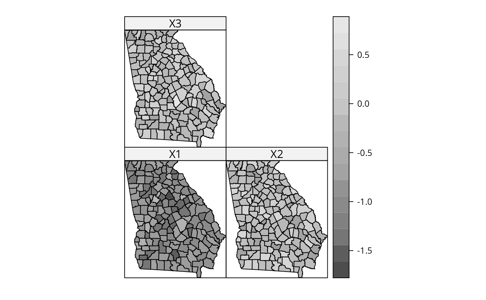
# pattern in the local coefficients
spplot(out$SDF, c("X1", "X2", "X3"), col.regions=grey.colors(20))
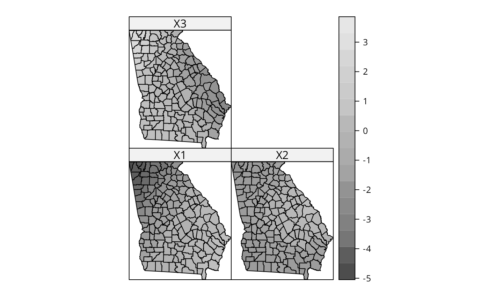
# but no "significant" pattern
spplot(out$SDF, c("X1_se", "X2_se", "X3_se"), col.regions=grey.colors(20))
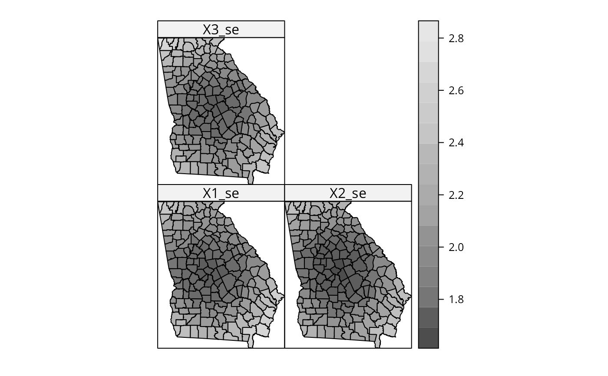
out$SDF$X1_t <- out$SDF$X1/out$SDF$X1_se
out$SDF$X2_t <- out$SDF$X2/out$SDF$X2_se
out$SDF$X3_t <- out$SDF$X3/out$SDF$X3_se
spplot(out$SDF, c("X1_t", "X2_t", "X3_t"), col.regions=grey.colors(20))
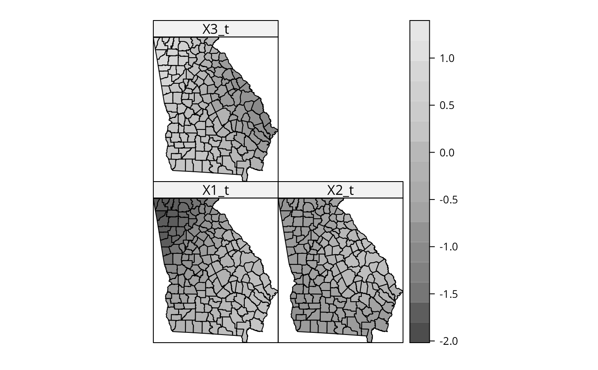
# simulation scenario with random dependent variable
yrn <- rnorm(nrow(gSRDF))
gSRDF$yrn <- sample(yrn)
bw <- gwr.sel(yrn ~ X1 + X2 + X3, data=gSRDF, verbose=FALSE)
#> Warning: Bandwidth converged to upper bound:620.559306125037
# bandwidth selection maxes out at 620 km, equal to upper bound
# of line search
out <- gwr(yrn ~ X1 + X2 + X3, data=gSRDF, bandwidth=bw, hatmatrix=TRUE)
out
#> Call:
#> gwr(formula = yrn ~ X1 + X2 + X3, data = gSRDF, bandwidth = bw,
#> hatmatrix = TRUE)
#> Kernel function: gwr.Gauss
#> Fixed bandwidth: 620.5592
#> Summary of GWR coefficient estimates at data points:
#> Min. 1st Qu. Median 3rd Qu. Max. Global
#> X.Intercept. 0.103959 0.116916 0.127859 0.139786 0.152315 0.1190
#> X1 0.228180 0.242052 0.253170 0.264197 0.278107 0.2430
#> X2 -0.536286 -0.523895 -0.517291 -0.511630 -0.501217 -0.5056
#> X3 0.095639 0.101254 0.104152 0.108421 0.117669 0.1108
#> Number of data points: 159
#> Effective number of parameters (residual: 2traceS - traceS'S): 4.526364
#> Effective degrees of freedom (residual: 2traceS - traceS'S): 154.4736
#> Sigma (residual: 2traceS - traceS'S): 1.092203
#> Effective number of parameters (model: traceS): 4.269576
#> Effective degrees of freedom (model: traceS): 154.7304
#> Sigma (model: traceS): 1.091296
#> Sigma (ML): 1.076544
#> AICc (GWR p. 61, eq 2.33; p. 96, eq. 4.21): 485.6487
#> AIC (GWR p. 96, eq. 4.22): 478.9464
#> Residual sum of squares: 184.2726
#> Quasi-global R2: 0.02455838
spplot(gSRDF, "yrn", col.regions=grey.colors(20))
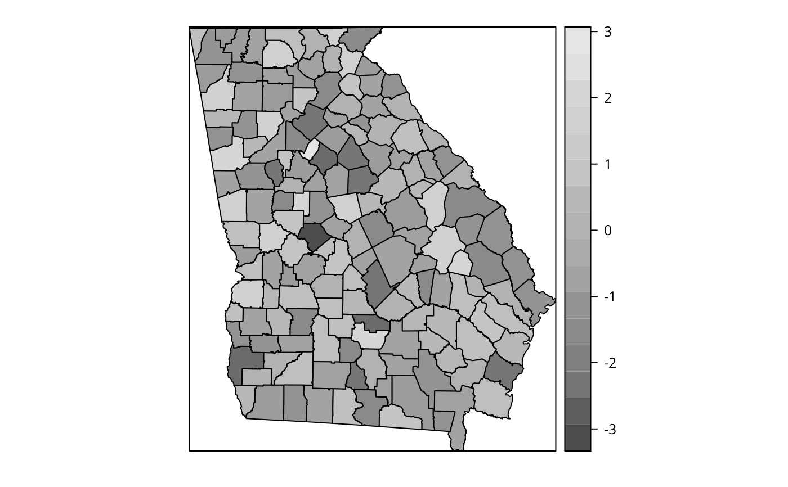
spplot(gSRDF, c("X1", "X2", "X3"), col.regions=grey.colors(20))
 # pattern in the local coefficients
spplot(out$SDF, c("X1", "X2", "X3"), col.regions=grey.colors(20))
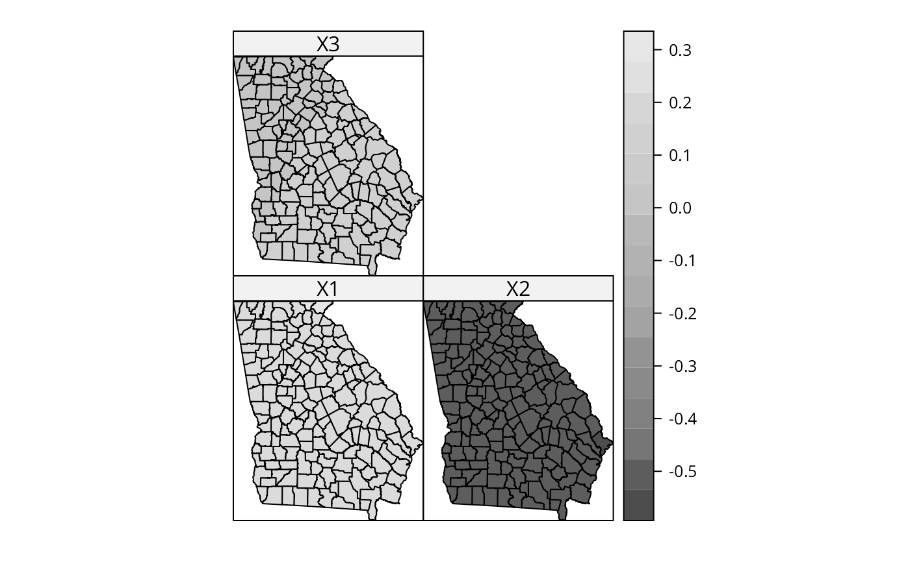
# but no "significant" pattern
spplot(out$SDF, c("X1_se", "X2_se", "X3_se"), col.regions=grey.colors(20))
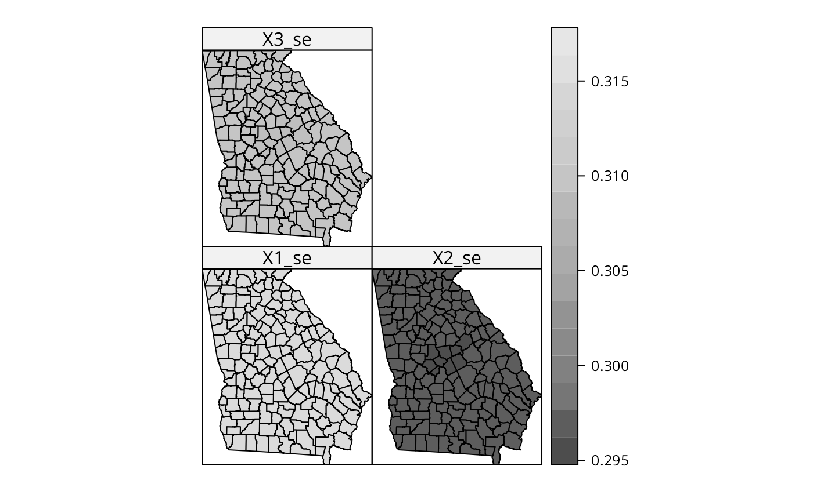
out$SDF$X1_t <- out$SDF$X1/out$SDF$X1_se
out$SDF$X2_t <- out$SDF$X2/out$SDF$X2_se
out$SDF$X3_t <- out$SDF$X3/out$SDF$X3_se
spplot(out$SDF, c("X1_t", "X2_t", "X3_t"), col.regions=grey.colors(20))
# end of simulations
# }
# \donttest{
data(meuse)
coordinates(meuse) <- c("x", "y")
meuse$ffreq <- factor(meuse$ffreq)
data(meuse.grid)
coordinates(meuse.grid) <- c("x", "y")
meuse.grid$ffreq <- factor(meuse.grid$ffreq)
gridded(meuse.grid) <- TRUE
xx <- gwr(cadmium ~ dist, meuse, bandwidth = 228, hatmatrix=TRUE)
xx
#> Call:
#> gwr(formula = cadmium ~ dist, data = meuse, bandwidth = 228,
#> hatmatrix = TRUE)
#> Kernel function: gwr.Gauss
#> Fixed bandwidth: 228
#> Summary of GWR coefficient estimates at data points:
#> Min. 1st Qu. Median 3rd Qu. Max. Global
#> X.Intercept. 1.2899 3.7496 5.6463 7.2603 12.9459 5.8795
#> dist -36.2255 -20.5680 -12.5101 -6.3063 12.1979 -10.9730
#> Number of data points: 155
#> Effective number of parameters (residual: 2traceS - traceS'S): 33.66762
#> Effective degrees of freedom (residual: 2traceS - traceS'S): 121.3324
#> Sigma (residual: 2traceS - traceS'S): 2.172593
#> Effective number of parameters (model: traceS): 25.01465
#> Effective degrees of freedom (model: traceS): 129.9854
#> Sigma (model: traceS): 2.099034
#> Sigma (ML): 1.92221
#> AICc (GWR p. 61, eq 2.33; p. 96, eq. 4.21): 705.4599
#> AIC (GWR p. 96, eq. 4.22): 667.4631
#> Residual sum of squares: 572.7084
#> Quasi-global R2: 0.7004953
x <- gwr(cadmium ~ dist, meuse, bandwidth = 228, fit.points = meuse.grid,
predict=TRUE, se.fit=TRUE, fittedGWRobject=xx)
x
#> Call:
#> gwr(formula = cadmium ~ dist, data = meuse, bandwidth = 228,
#> fit.points = meuse.grid, se.fit = TRUE, predictions = TRUE,
#> fittedGWRobject = xx)
#> Kernel function: gwr.Gauss
#> Fixed bandwidth: 228
#> Fit points: 3103
#> Summary of GWR coefficient estimates at fit points:
#> Min. 1st Qu. Median 3rd Qu. Max.
#> X.Intercept. 1.2675 3.1758 4.7424 6.7630 14.151
#> dist -39.2780 -16.4603 -8.9569 -4.6925 21.183
spplot(x$SDF, "pred")
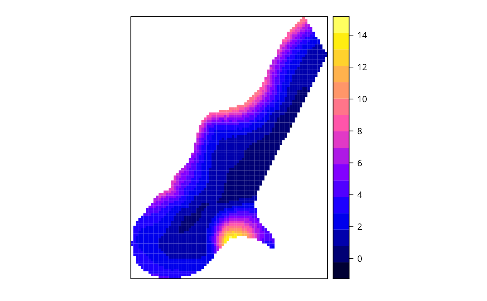
spplot(x$SDF, "pred.se")
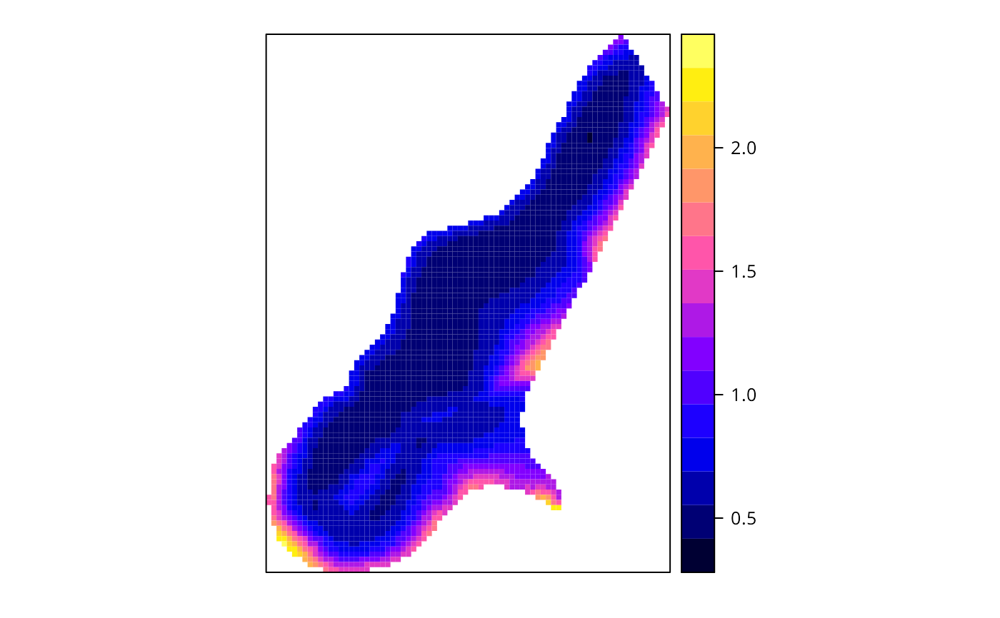
# }
if (FALSE) {
g.bw.gauss <- gwr.sel(PctBach ~ TotPop90 + PctRural + PctEld + PctFB +
PctPov + PctBlack, data=gSRDF)
res.bw <- gwr(PctBach ~ TotPop90 + PctRural + PctEld + PctFB + PctPov +
PctBlack, data=gSRDF, bandwidth=g.bw.gauss)
res.bw
pairs(as(res.bw$SDF, "data.frame")[,2:8], pch=".")
plot(res.bw$SDF, col=cols[findInterval(res.bw$SDF$PctBlack, brks,
all.inside=TRUE)])
g.bw.gauss <- gwr.sel(PctBach ~ TotPop90 + PctRural + PctEld + PctFB +
PctPov + PctBlack, data=gSRDF, longlat=TRUE)
data(gSRouter)
# require(maptools)
# SG <- GE_SpatialGrid(gSRouter, maxPixels = 100)
if (require(sf, quietly=TRUE) && require(stars, quietly=TRUE)) {
SG_0 <- st_as_stars(st_bbox(st_as_sf(gSRouter)), nx=87, ny=100)
SG <- as(SG_0, "Spatial")
SPxMASK0 <- over(SG, gSRouter)
SGDF <- SpatialGridDataFrame(slot(SG, "grid"),
data=data.frame(SPxMASK0=SPxMASK0),
proj4string=CRS(proj4string(gSRouter)))
SPxDF <- as(SGDF, "SpatialPixelsDataFrame")
res.bw <- gwr(PctBach ~ TotPop90 + PctRural + PctEld + PctFB + PctPov +
PctBlack, data=gSRDF, bandwidth=g.bw.gauss, fit.points=SPxDF,
longlat=TRUE)
res.bw
res.bw$timings
spplot(res.bw$SDF, "PctBlack")
require(parallel)
cl <- makeCluster(detectCores())
res.bwc <- gwr(PctBach ~ TotPop90 + PctRural + PctEld + PctFB + PctPov +
PctBlack, data=gSRDF, bandwidth=g.bw.gauss, fit.points=SPxDF,
longlat=TRUE, cl=cl)
res.bwc
res.bwc$timings
stopCluster(cl)
}
}
# pattern in the local coefficients
spplot(out$SDF, c("X1", "X2", "X3"), col.regions=grey.colors(20))
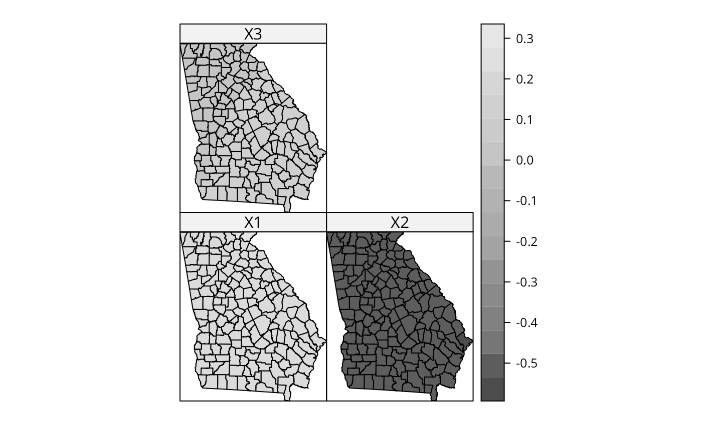
# but no "significant" pattern
spplot(out$SDF, c("X1_se", "X2_se", "X3_se"), col.regions=grey.colors(20))
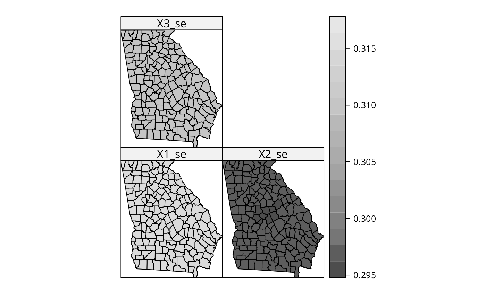
out$SDF$X1_t <- out$SDF$X1/out$SDF$X1_se
out$SDF$X2_t <- out$SDF$X2/out$SDF$X2_se
out$SDF$X3_t <- out$SDF$X3/out$SDF$X3_se
spplot(out$SDF, c("X1_t", "X2_t", "X3_t"), col.regions=grey.colors(20))
# end of simulations
# }
# \donttest{
data(meuse)
coordinates(meuse) <- c("x", "y")
meuse$ffreq <- factor(meuse$ffreq)
data(meuse.grid)
coordinates(meuse.grid) <- c("x", "y")
meuse.grid$ffreq <- factor(meuse.grid$ffreq)
gridded(meuse.grid) <- TRUE
xx <- gwr(cadmium ~ dist, meuse, bandwidth = 228, hatmatrix=TRUE)
xx
#> Call:
#> gwr(formula = cadmium ~ dist, data = meuse, bandwidth = 228,
#> hatmatrix = TRUE)
#> Kernel function: gwr.Gauss
#> Fixed bandwidth: 228
#> Summary of GWR coefficient estimates at data points:
#> Min. 1st Qu. Median 3rd Qu. Max. Global
#> X.Intercept. 1.2899 3.7496 5.6463 7.2603 12.9459 5.8795
#> dist -36.2255 -20.5680 -12.5101 -6.3063 12.1979 -10.9730
#> Number of data points: 155
#> Effective number of parameters (residual: 2traceS - traceS'S): 33.66762
#> Effective degrees of freedom (residual: 2traceS - traceS'S): 121.3324
#> Sigma (residual: 2traceS - traceS'S): 2.172593
#> Effective number of parameters (model: traceS): 25.01465
#> Effective degrees of freedom (model: traceS): 129.9854
#> Sigma (model: traceS): 2.099034
#> Sigma (ML): 1.92221
#> AICc (GWR p. 61, eq 2.33; p. 96, eq. 4.21): 705.4599
#> AIC (GWR p. 96, eq. 4.22): 667.4631
#> Residual sum of squares: 572.7084
#> Quasi-global R2: 0.7004953
x <- gwr(cadmium ~ dist, meuse, bandwidth = 228, fit.points = meuse.grid,
predict=TRUE, se.fit=TRUE, fittedGWRobject=xx)
x
#> Call:
#> gwr(formula = cadmium ~ dist, data = meuse, bandwidth = 228,
#> fit.points = meuse.grid, se.fit = TRUE, predictions = TRUE,
#> fittedGWRobject = xx)
#> Kernel function: gwr.Gauss
#> Fixed bandwidth: 228
#> Fit points: 3103
#> Summary of GWR coefficient estimates at fit points:
#> Min. 1st Qu. Median 3rd Qu. Max.
#> X.Intercept. 1.2675 3.1758 4.7424 6.7630 14.151
#> dist -39.2780 -16.4603 -8.9569 -4.6925 21.183
spplot(x$SDF, "pred")
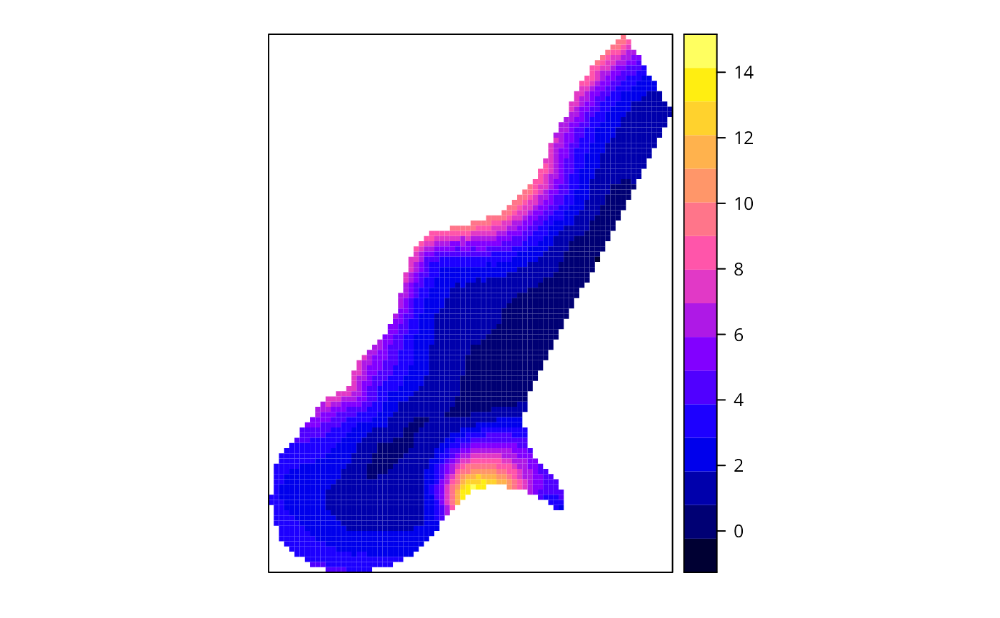
spplot(x$SDF, "pred.se")
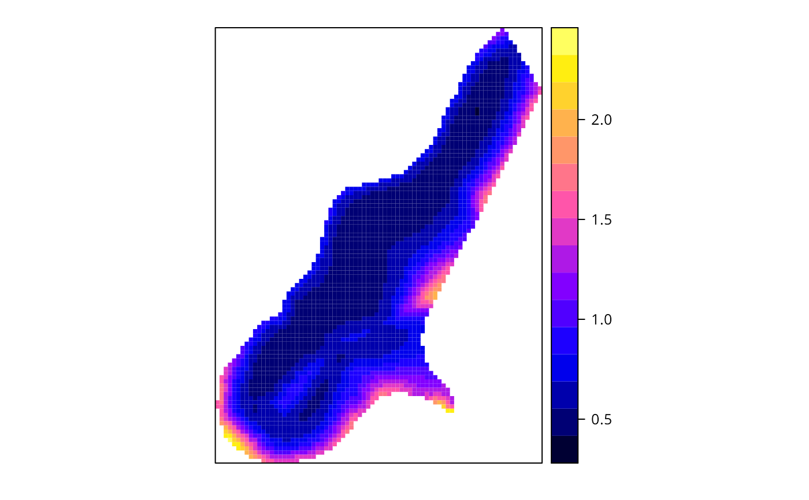
# }
if (FALSE) {
g.bw.gauss <- gwr.sel(PctBach ~ TotPop90 + PctRural + PctEld + PctFB +
PctPov + PctBlack, data=gSRDF)
res.bw <- gwr(PctBach ~ TotPop90 + PctRural + PctEld + PctFB + PctPov +
PctBlack, data=gSRDF, bandwidth=g.bw.gauss)
res.bw
pairs(as(res.bw$SDF, "data.frame")[,2:8], pch=".")
plot(res.bw$SDF, col=cols[findInterval(res.bw$SDF$PctBlack, brks,
all.inside=TRUE)])
g.bw.gauss <- gwr.sel(PctBach ~ TotPop90 + PctRural + PctEld + PctFB +
PctPov + PctBlack, data=gSRDF, longlat=TRUE)
data(gSRouter)
# require(maptools)
# SG <- GE_SpatialGrid(gSRouter, maxPixels = 100)
if (require(sf, quietly=TRUE) && require(stars, quietly=TRUE)) {
SG_0 <- st_as_stars(st_bbox(st_as_sf(gSRouter)), nx=87, ny=100)
SG <- as(SG_0, "Spatial")
SPxMASK0 <- over(SG, gSRouter)
SGDF <- SpatialGridDataFrame(slot(SG, "grid"),
data=data.frame(SPxMASK0=SPxMASK0),
proj4string=CRS(proj4string(gSRouter)))
SPxDF <- as(SGDF, "SpatialPixelsDataFrame")
res.bw <- gwr(PctBach ~ TotPop90 + PctRural + PctEld + PctFB + PctPov +
PctBlack, data=gSRDF, bandwidth=g.bw.gauss, fit.points=SPxDF,
longlat=TRUE)
res.bw
res.bw$timings
spplot(res.bw$SDF, "PctBlack")
require(parallel)
cl <- makeCluster(detectCores())
res.bwc <- gwr(PctBach ~ TotPop90 + PctRural + PctEld + PctFB + PctPov +
PctBlack, data=gSRDF, bandwidth=g.bw.gauss, fit.points=SPxDF,
longlat=TRUE, cl=cl)
res.bwc
res.bwc$timings
stopCluster(cl)
}
}